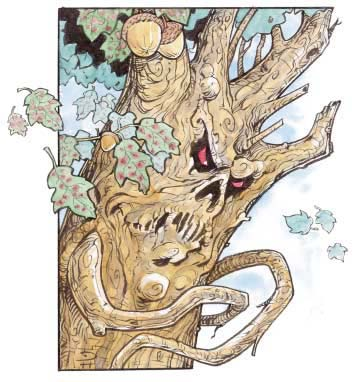

超大型植物（跨位面）

| 生命骰： | 12d8+72 (126 生命值) |
| 先攻： | �C1 |
| 速度： | 10 英尺 |
| 防御等级： | 25 (�C2 体型，�C1 敏捷，+18 天生护甲)，接触 7，措手不及 25 |
| 基本攻击／擒抱： | +9/+27 |
| 攻击： | 触须 +17 近战 |
| 全力攻击： | 4 条触须 +17 近战 及 啮咬 +12 近战 |
| 伤害： | 触须 2d6+10/19�C20，啮咬 1d8+5 |
| 面宽／触及： | 15 英尺/15 英尺（触须触及 60 英尺） |
| 特殊攻击： | 吸附、吞没、疾病、触须、流血 |
| 特殊能力： | 强酸抗力 10，寒冷免疫，伤害减免 20/魔法挥砍，电击免疫，植物特性，音波抗力 10，法术抗力 30 (SR 30) |
| 豁免： | 强韧 +14，反射 +3，意志 +5 |
| 属性： | 力量 30，敏捷 9，体质 23，智力 4，感知 13，魅力 14 |
| 技能： | 躲藏 +6*，聆听 +14，侦察 +13 |
| 专长： | 警觉，顺势斩，强力顺势斩，精通重击（触须），猛力攻击 |
| 地域： | 温带与暖温带森林、丘陵与沼泽（无底深渊） |
| 组织： | 独行，成对，或树丛 (3�C6) |
| 挑战等级： | 13 |
| 宝物： | 1/10 钱币，50% 物品，50% 装备 |
| 阵营： | 总是中立邪恶 |
| 进化： | 13�C16 HD（超大型）；17�C36 HD（巨型） |
训练有素的观察者能轻易辨识出铁颚树的领地。没有其他野生生物靠近它的"家园"，地面上常常散落着该生物昔日受害者的残骸。但大多数生物直到铁颚树发起攻击时才知道自己已身处其附近。
一棵铁颚树高 20 到 30 英尺。它形似橡树，但其绿叶上布满如新鲜血液般色泽的微小斑点。在不使用时，它的触须盘绕在其上部树干上，其口部在攻击前一直保持闭合。
铁颚树倾向于长时间停留在一个地点。它会攻击任何进入其触须范围内的生物，即使它最近刚进食过。铁颚树通常只在树丛发展到规模过大以至于没有足够食物供养所有个体时才会迁移，此时其中一只或多只会移向更丰饶的牧场。
铁颚树会说深渊语 (Abyssal)。
一旦猎物进入触及范围（60 英尺），铁颚树会立即用其触须攻击。铁颚树在几乎所有情况下都太过笨重无法逃离，因此总是战斗至死。
吸附 (Attach)（Ex）：如果铁颚树以触须攻击命中，该触须除了造成正常伤害外，还会吸附在对手的身体上。除非对手挣脱（需要一次逃脱检定（DC 25）或力量检定（DC 26）成功），否则该触须会在之后的每轮将吸附的对手拉近 10 英尺（无借机攻击）。铁颚树可以在该轮将 15 英尺内的生物拉近并额外获得+4攻击加值进行啮咬。铁颚树也可以将生物拉入其占据的空间并尝试将其吞噬。
触须可以被一次挥砍武器的攻击切断（视作击破武器尝试），攻击至少需造成 13 点伤害。
吞没 (Engulf)（Ex）：作为一个标准动作，铁颚树可以尝试吞噬一个进入其占据空间的大型或更小体型的生物。该攻击的目标可以尝试借机攻击，但如果这样做，则无权进行豁免检定。未尝试借机攻击的目标必须通过反射豁免（DC 15），否则将被吞噬；成功则被推回或推开（但不会从吸附的触须中解脱）。被吞噬的生物在铁颚树的树干内每轮受到 2d6+10 点钝击伤害，并且必须屏住呼吸，否则将开始窒息。
疾病 (Illness)（Ex）：铁颚树的触须能侵蚀对手的健康。任何被触须抓住的生物必须通过强韧豁免检定（DC 22），否则将受到 1d6 点体质伤害。
触须 (Tendrils)（Ex）：铁颚树能用它的四条触须攻击至多 60 英尺远的敌人。任何被触须击中的生物都会受到伤害、失血、可能罹患疾病，并有被拖向铁颚树树干的风险。
流血 (Wounding)（Ex）：由铁颚树触须攻击造成的伤口会流血，此后每轮造成额外的 3 点伤害。来自此类攻击的多处伤口会导致累积性流血伤害（两处伤口每轮造成 6 点伤害，以此类推）。流血只能通过医疗检定（DC 10）或施展任何治疗法术或其他治疗法术（如医疗术 (heal)、医疗法阵 (healing circle)或类似法术）来止住。
植物特性 (Plant Traits)（Ex）：铁颚树免疫毒素、睡眠、麻痹、震慑和变形效果。它不受重击或影响心灵的效果影响。铁颚树还拥有昏暗视觉。
技能：铁颚树的技能如同它们是精类生物。铁颚树在聆听和侦察检定上拥有+8种族加值。*在林地环境中，铁颚树在躲藏检定上拥有+15种族加值。